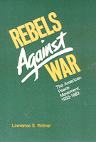

This classic history recounts the rise of one of America's most important social movements
This classic history recounts the rise of one of America's most important social movements


 This classic history recounts the rise of one of America's most important social movements
This classic history recounts the rise of one of America's most important social movements

|  |
Rebels Against WarThe American Peace Movement, 1933-1983Lawrence S. Wittnerpaper EAN: 978-0-87722-342-9 (ISBN: 0-87722-342-4) |
"The important and seminal work on recent American pacificism...A thorough, toughminded and scholarly study."
—The Jewish Peace Fellowship
This newly-expanded edition of the 1969 classic history of the American peace movement recounts the rise to prominence of one of America's most important social movements over the past half-centry.
"[A]n eye opener...probably the best such study available."
—The Progressive
"A valuable contribution to American history."
—American Historical Review
"Buy and keep this fine history as a reference work on a hitherto largely unexplored period in the history of the American peace movement."
—The Christian Century
"A concisely written, thoroughly researched and insightful study."
—Journal of American History
"A work that will, for some time, be considered a definitive history."
—World Affairs
 | Lawrence S. Wittner is Professor of History at State University of New York, Albany. |
© 2015 Temple University. All Rights Reserved. This page: http://www.temple.edu/tempress/titles/332_reg.html.